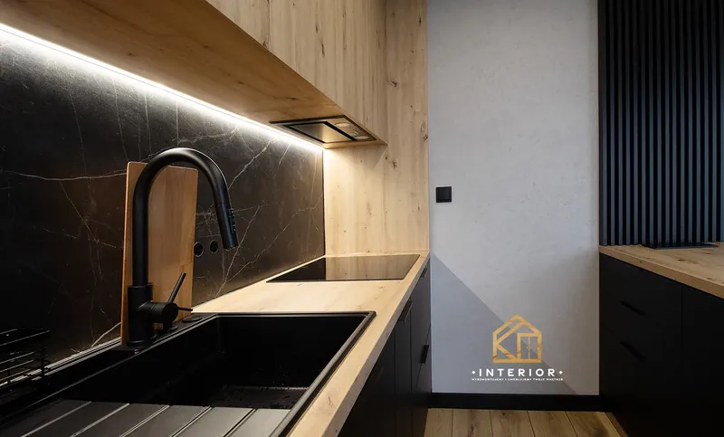
Mieszkanie w Katowicach
- Korpusy:
- czerń i Dąb Artisan
- Fronty:
- akrylowe antyfinger, czarne mat
Kuchnie, garderoby i szafy robimy na wymiar, a łazienki i całe mieszkania wykańczamy od gładzi po biały montaż.
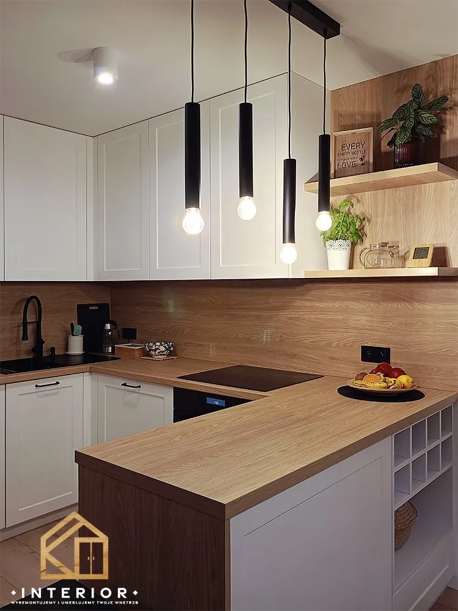
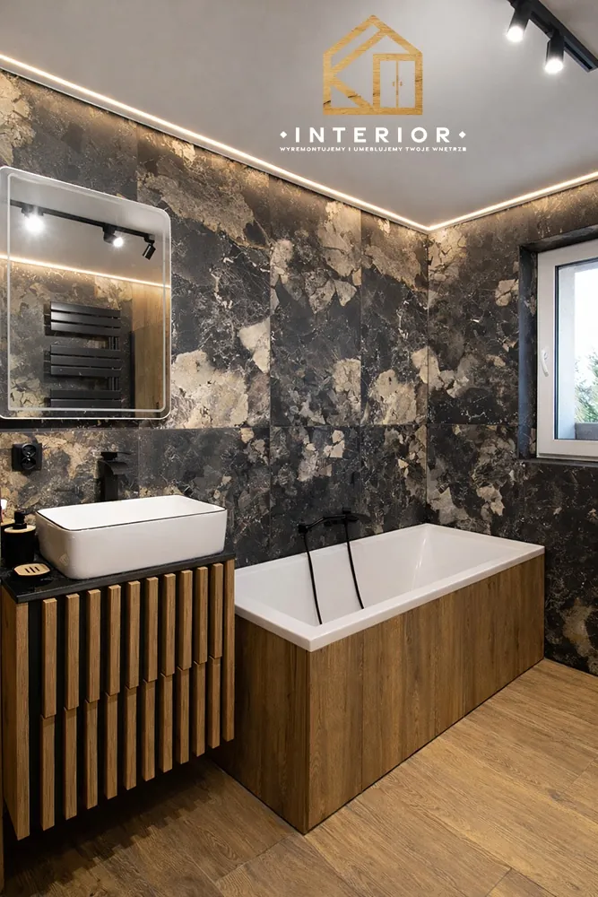
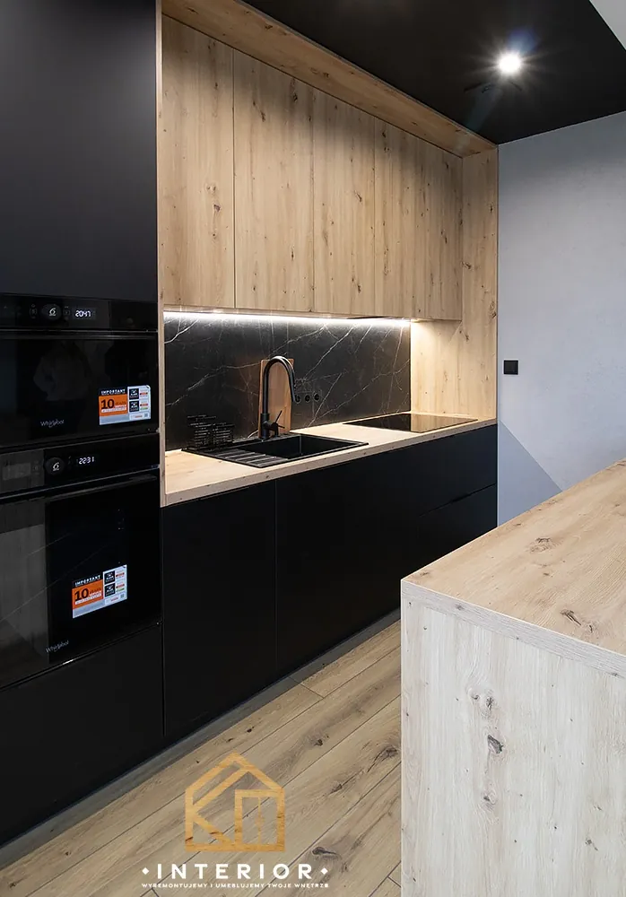
Robimy meble na wymiar i prace wykończeniowe, więc kuchnię, łazienkę albo całe mieszkanie można zlecić jednej firmie: od przeróbki ścian i płytek po montaż ostatniego frontu.
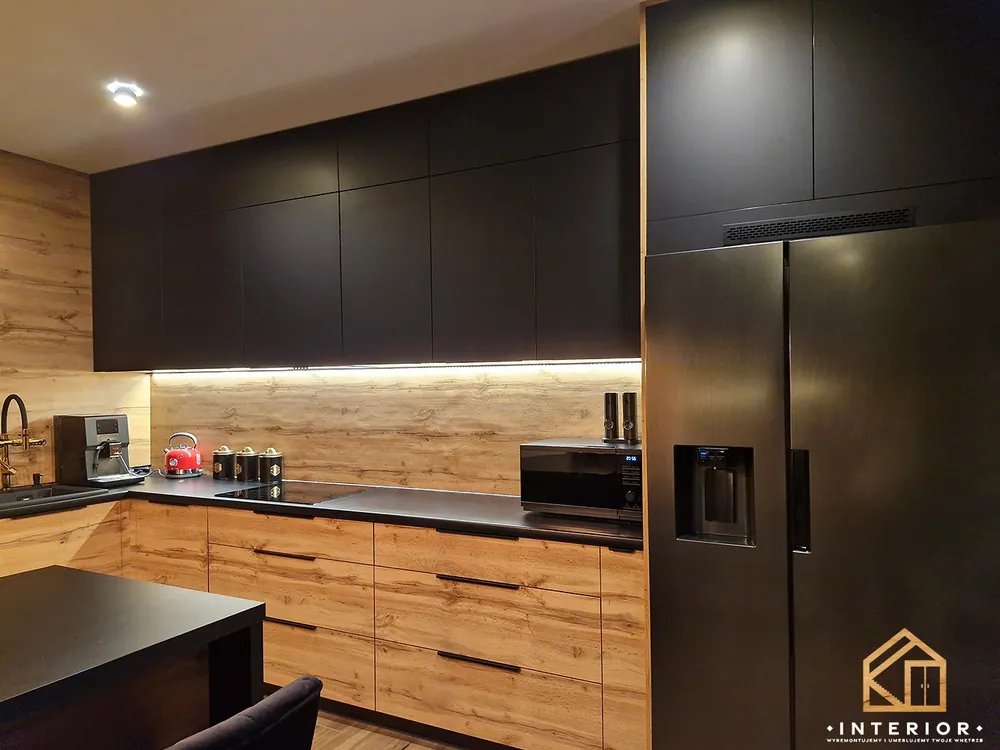
Tworzymy meble dopasowane do wnętrza co do centymetra, z płyt i blatów renomowanych producentów, w szerokim wyborze kolorów, struktur i dekorów drewna.
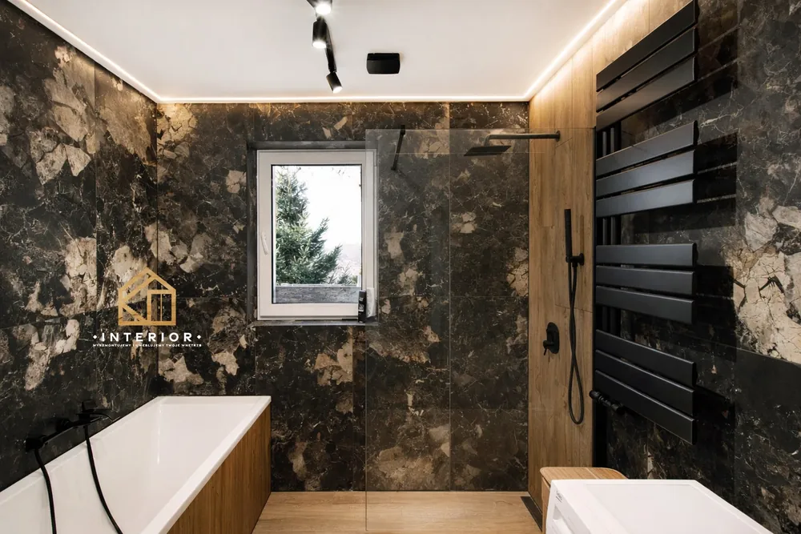
Odświeżamy, zmieniamy albo wykańczamy od zera mieszkania, domy i biura. Wykonujemy też kompleksowo całe łazienki.
Kuchnie, łazienki i całe mieszkania z ostatnich lat. Przy każdej podajemy materiały, z których powstała.

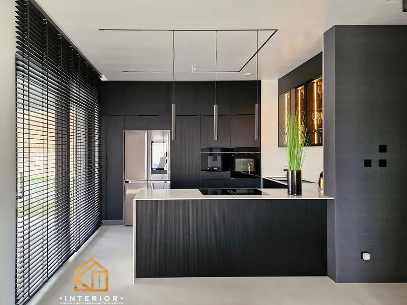
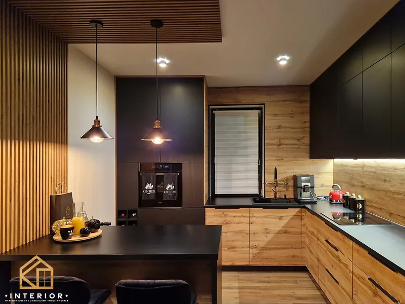
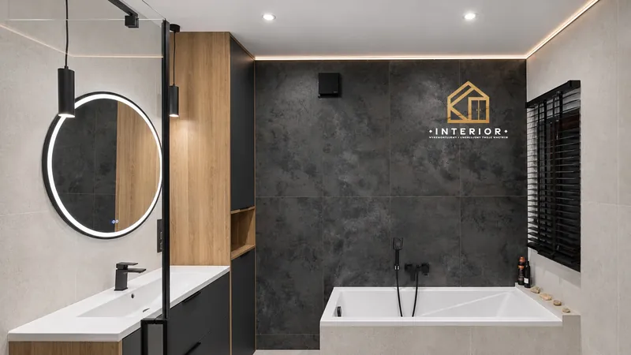
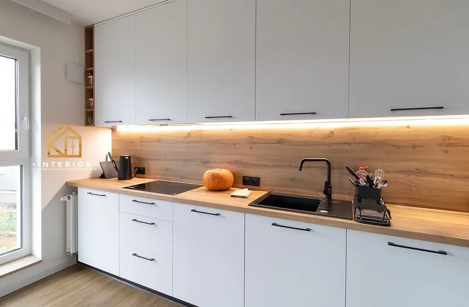
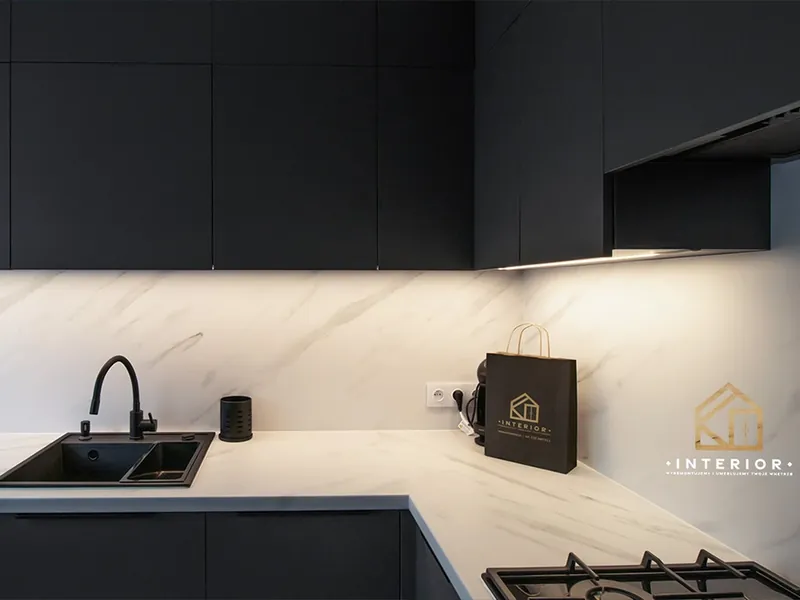
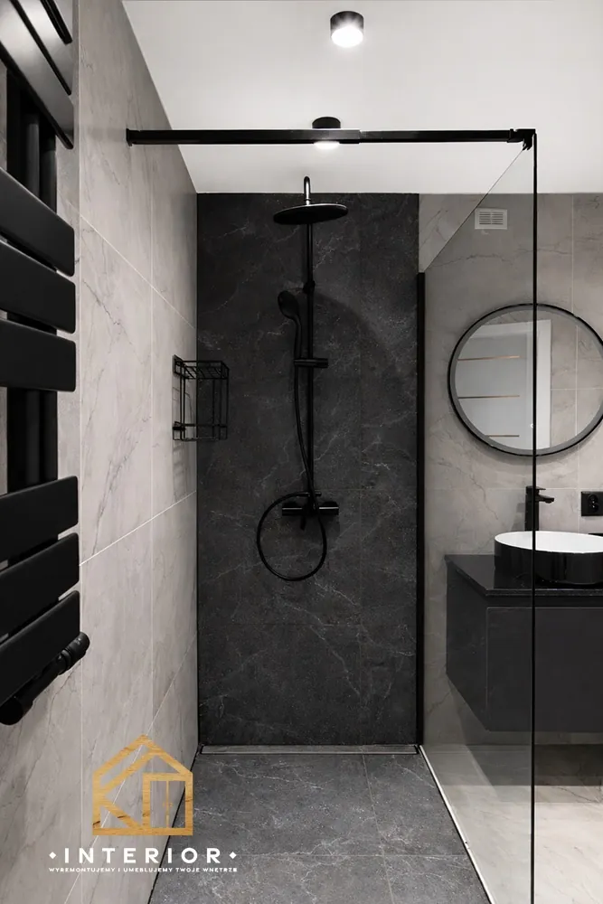
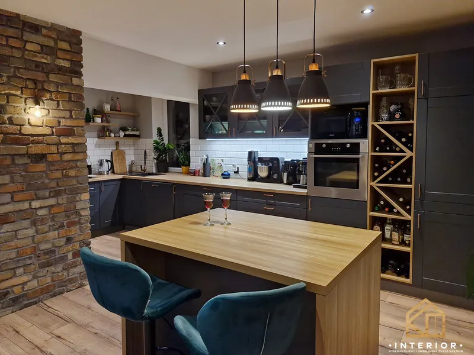
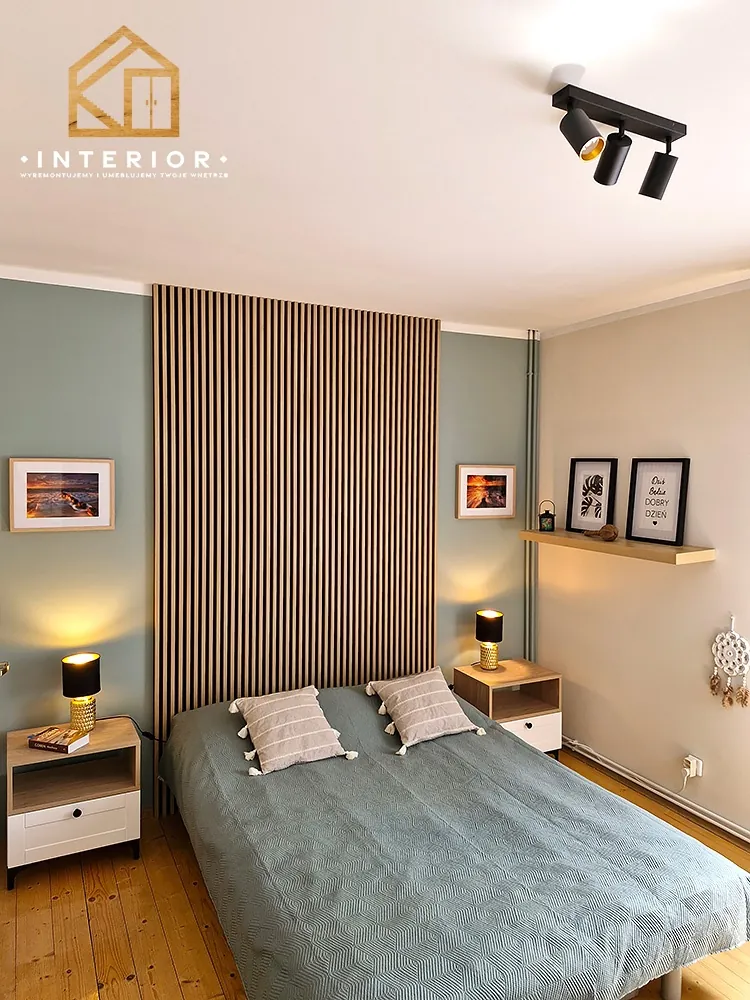
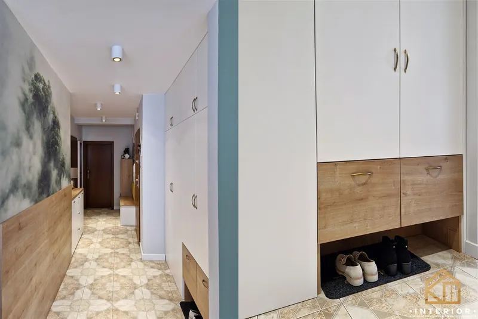
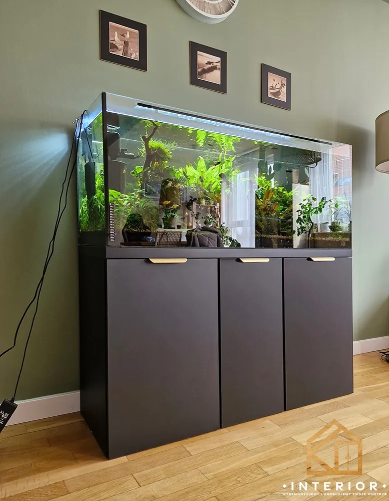
Od klasycznej bieli i czerni po dekory drewna i kamienia. Poniżej materiały z naszych ostatnich realizacji.
Fronty antyfinger to powłoka, na której nie zostają odciski palców.
INTERIOR to firma Kamila Orlikowskiego z Sosnowca. Zajmujemy się kompleksowym remontowaniem i urządzaniem wnętrz: robimy meble na wymiar i prace wykończeniowe w mieszkaniach, domach i biurach.
Przy meblach pomagamy też w projekcie, a w trakcie prac na bieżąco informujemy o postępach i zmianach. Pracujemy na materiałach znanych producentów i trzymamy się ustalonych terminów.
Kamil Orlikowski
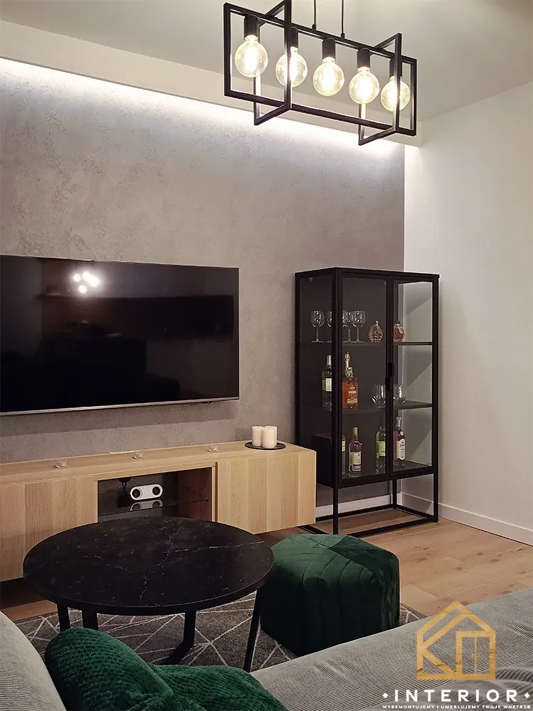
Sześć opinii klientów, wszystkie na pięć gwiazdek.
Meble wykonane idealnie wg projektu, w uzgodnionym terminie, bez dodatkowych kosztów. Kuchnia, łazienka i salon - jestem bardzo zadowolona. Świetny kontakt i pomoc w trakcie realizacji.Monika KrzysiakGoogle
Wszystko wykonane profesjonalnie na bardzo dobrych materiałach. Z racji doświadczenia Pan Kamil pomógł nam w projektowaniu naszej kuchni, gdzie ostateczny efekt przerósł nasze oczekiwania.Gabriela NowakGoogle
Rewelacyjna realizacja i pełen profesjonalizm! Efekt końcowy wyszedł lepiej niż oczekiwałam, wszystko wykonane z ogromną dbałością. Bardzo wysoka jakość.Wioleta KreftaGoogle
Doskonała jakość świadczonych usług. Meble idealnie wykonane i w świetnej jakości. Dodatkowo poprawili to, co poprzednia ekipa remontowa zepsuła.Łukasz GóreckiGoogle
Bardzo polecam usługi Pana Kamila z firmy INTERIOR. Profesjonalna obsługa. Meble wykonane bardzo ładnie, dokładnie tak, jak zostały zaprojektowane. Świetny kontakt.Marcin PedzikGoogle
Jestem bardzo zadowolony z wykonanych mebli. Jakościowo oraz terminowo w punkt.Bartosz OsiadłoGoogle
Napisz, co chcesz zrobić: nowe meble, remont czy całe mieszkanie. Odezwiemy się, żeby ustalić szczegóły i wycenę.
INTERIOR Kamil Orlikowski
Usługi Stolarskie i Wykończeniowe
ul. Kilińskiego 64/25, 41-209 Sosnowiec
NIP 6443575085 · REGON 525561485